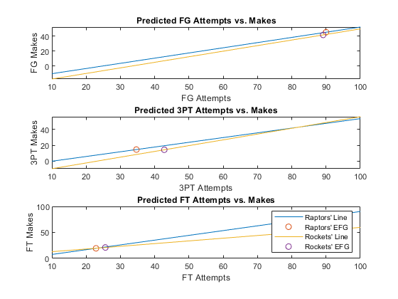

Raptors = main('raphomeoff.csv','rockawaydefense.csv')
Rockets = main('rockawayoff.csv','raphomedef.csv')
function [fgm,fga,tpm,tpa,ftm,fta] = vect(x)
y = table2array(readtable(x));
fgm = sort(y(:,1))';
fga = sort(y(:,2))';
tpm = sort(y(:,3))';
tpa = sort(y(:,4))';
ftm = sort(y(:,5))';
fta = sort(y(:,6))';
end
function efga = ava(m,n)
m1 = mean(m,'all');
m2 = mean(n,'all');
efga = (m1 + m2)/2;
end
function f = linreg(t,y,x)
g = linspace(10,100,100);
[r,m,b] = regression(t,y);
f = x*m + b + r;
c = g.*m + b +r;
plot(g,c); hold on; plot(x,f,'o');
end
function s = score(fg,three,ft)
s = round(fg*2 + three + ft);
end
function final_score = main(t1,t2)
[fgm1,fga1,tpm1,tpa1,ftm1,fta1] = vect(t1);
[fgm2,fga2,tpm2,tpa2,ftm2,fta2] = vect(t2);
subplot(3,1,1)
title('Predicted FG Attempts vs. Makes');
xlabel('FG Attempts'), ylabel('FG Makes');
efga = ava(fga1,fga2);
efgm = linreg(fga1,fgm1,efga);
subplot(3,1,2)
title('Predicted 3PT Attempts vs. Makes');
xlabel('3PT Attempts'), ylabel('3PT Makes');
etpa = ava(tpa1,tpa2);
etpm = linreg(tpa1,tpm1,etpa);
subplot(3,1,3)
title('Predicted FT Attempts vs. Makes');
xlabel('FT Attempts'), ylabel('FT Makes');
efta = ava(fta1,fta2);
eftm = linreg(fta1,ftm1,efta);
legend("Raptors' Line","Raptors' EFG","Rockets' Line","Rockets' EFG");
final_score = score(efgm,etpm,eftm);
end
Warning: Ignoring extra legend entries.
Raptors =
124
Rockets =
118
